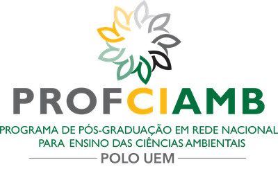
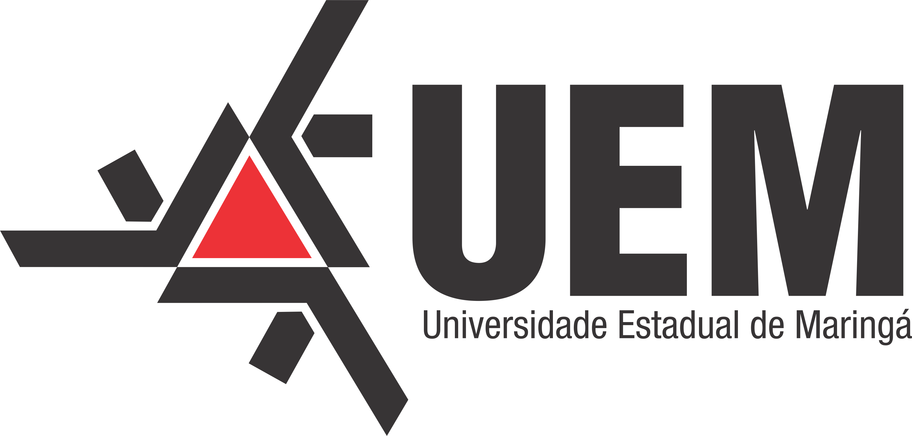
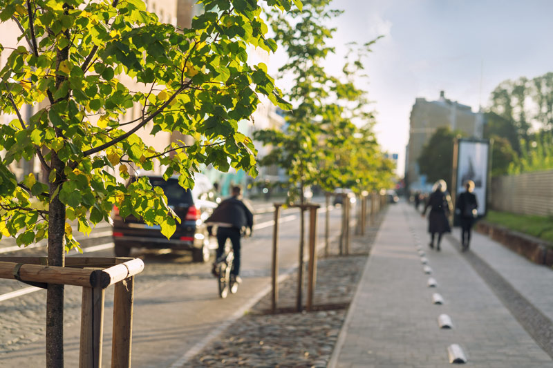

Universidade Estadual de Maringá - Campus Regional de Goioerê


Glossário LIBRAS de Arborização Urbana
Goioerê-PR: Conectando Conhecimento Ambiental e Acessibilidade
Bem-vindo(a) ao Nosso Glossário Digital!
Este espaço é dedicado à disseminação do conhecimento sobre arborização urbana, tornando-o acessível em Língua Brasileira de Sinais (LIBRAS). Um projeto que une tecnologia, educação ambiental e inclusão.
Explore os termos, assista aos vídeos em LIBRAS e aprenda mais sobre a importância das árvores em nosso meio urbano.
Idealização e Desenvolvimento: Sherley José Donaris Colombani Macedo
Orientação: Prof. Dr. Felipe Fontana
Colaboração: Prof. Bilíngue Surdo Fernando Fioreti Frasson
Projeto de Mestrado – UEM, Campus Goioerê-PR

Nota Técnica Detalhada sobre o Glossário
Este glossário digital foi concebido com o objetivo primordial de promover a acessibilidade linguística e informacional, disponibilizando terminologias específicas da área ambiental e de arborização urbana traduzidas para a Língua Brasileira de Sinais (LIBRAS). Acreditamos que o acesso à informação é um direito fundamental e um pilar para a construção de uma sociedade mais justa e inclusiva.
O conteúdo aqui apresentado foi cuidadosamente sistematizado a partir de fontes bibliográficas e digitais reconhecidas e confiáveis, como Jardineiro.net, Dicio.com.br, e publicações científicas da área. Buscamos fornecer definições claras, concisas e contextualizadas sobre os termos relacionados à arborização urbana.
Nossa missão é contribuir ativamente para a inclusão da comunidade surda nas discussões e práticas relacionadas à temática ambiental urbana. Ao unir tecnologia e educação ambiental, esperamos fomentar o interesse, o aprendizado e o engajamento cívico em prol de cidades mais verdes, saudáveis e acessíveis para todos.
Este é um fruto do Programa de Pós-Graduação em Sustentabilidade (Mestrado Profissional) da Universidade Estadual de Maringá – Campus Regional de Goioerê.
Explore os Termos
Título do Termo
Sua busca não retornou resultados. Tente palavras-chave diferentes ou verifique a ortografia.